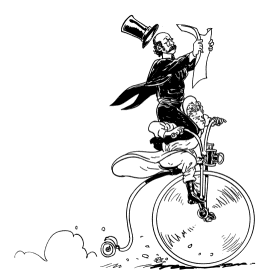

In a change from previous years, CAPTION will be held in Wolfson College, Oxford, a large modern graduates’ college in North Oxford, on the banks of the River Cherwell.

Unusually for an Oxford College it is fairly easy to reach by car (see how to get there on their web site, including MultiMap directions) and there is a car park.
Train. Wolfson is approximately 2 miles from the Oxford train station. From the station, take a bus 2A or 2C. Get off at St Margaret’s Road. Cross Banbury Road and turn on to Lindon Road. Wolfson College is at the end of Lindon Road.
Coach. Wolfson is about one mile from the Gloucester Green bus station. From the station, walk up George Street to Magdalen Street. Take a bus 2A, 2C or 7 at the bus stop in front of Borders bookshop and get off at St Margaret’s road as before.
Taxis from anwhere in the centre of town should cost less than £5.
If you are travelling from afar, or attending both days, then
you will need to stay overnight on the Saturday. Oxford now
boasts a Youth Hostel right next to the train station, and there
are many lists of b&bs available on-line. We can supply a
hotel list -- send a mail to
caption2004@caption.org to
request one.
One of CAPTION’s unique advantages has been its cheap bar and sunny garden -- perfect for hob-nobbing with your comics-minded friends, whether you prefer slowly crisping in the sunshine or skulking in the shadows. Wolfson College also boasts a bar open for the event, has its own gardens, and is situated on the banks of the River Cherwell besides!